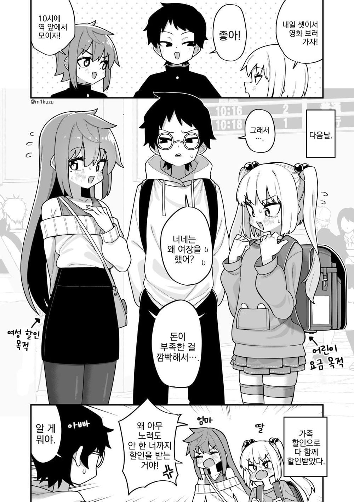

🍆) 친구들끼리 영화 보러 가는 만화.manhwa
댓글
이게 맛도리거든요
에토리
시나가와 미쿠즈....
땡 작가는 개꼴리는 가학 보추물의 대가 시나가와미쿠즈임 당장 시나가와미쿠즈의 걸작 ひどい目に遭う男の子たち 시리즈부터 읽고 오도록
뚜뚜쭈 사형은 그걸 어찌 아시오?
크흑 내가 보추력이 적어서..
이 경우 누가 가운데에 위치할것인가?
위댓에 '죽음으로 맛없는데 vs 죽음으로 맛있는데' 가 있네
처녀임?
집안 존나 망했네
아주그냥개지랄똥을싼다진짜
일본은 여성할인이 있음?
요즘 보추는 양산형이라서 깊은 맛이 없어 깊은 맛이
에잉 쯧